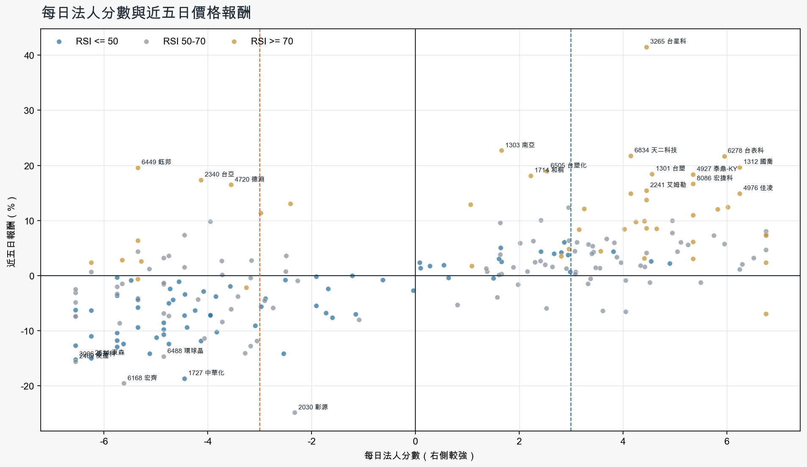
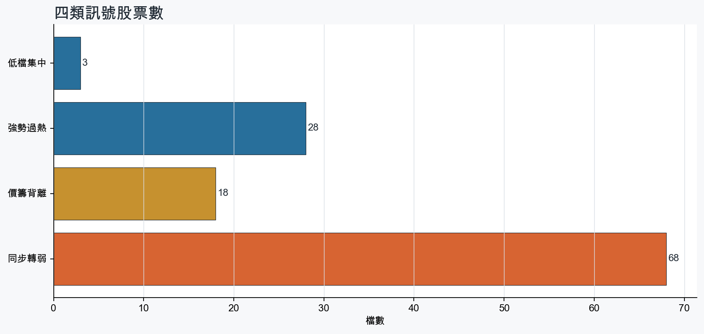
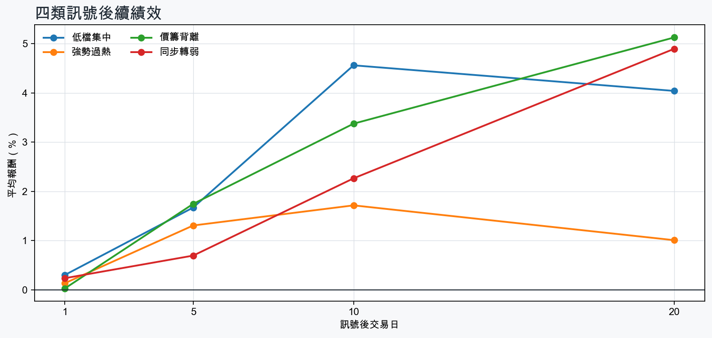

市場情緒偏空
近5日法人合計-4,721,975 張
篩選池上漲比例54.5%
籌碼好 / RSI低3 檔
籌碼差 / 價跌15 檔



EPS × PE VALUATION
法人常用的相對估值
顯示保守、基準與樂觀估值帶，不把單一數字包裝成精準目標價。
最新累計 EPS 依季數年化 × 同產業有效 P/E 的 Q25／中位數／Q75。排除本公司、非正 P/E，並以 1.5×IQR 排除離群值。估值帶是公開資料篩選值，不是法人目標價；未使用分析師預估 EPS。
MOOD × MONEY
情緒與籌碼雷達
熱度代表被討論程度；情緒分與法人方向分開計算。熱門不等於適合追價，樣本不足也不硬判多空。
| 股票 | 情緒 | 討論熱度 | 情緒 × 籌碼 | 情緒 × 基本面 |
|---|---|---|---|---|
| 3033 威健價籌背離 | 情緒高漲 +86.0信心 86 | 1002 篇 / 52 留言 / 3 則新聞 | 熱門但法人撤退法人分 -5.1 | 基本面與情緒共振基本面分 +1.0 |
| 4938 和碩強勢過熱 | 情緒高漲 +53.3信心 71 | 941 篇 / 40 留言 / 3 則新聞 | 情籌共振法人分 +4.2 | 基本面與情緒共振基本面分 +3.0 |
| 3006 晶豪科同步轉弱 | 情緒低迷 -35.2信心 72 | 921 篇 / 36 留言 / 3 則新聞 | 情籌雙弱法人分 -6.5 | 基本面佳、情緒悲觀基本面分 +3.6 |
| 2409 友達同步轉弱 | 中性分歧 -4.3信心 65 | 901 篇 / 31 留言 / 3 則新聞 | 高熱分歧法人分 -6.5 | 基本面與情緒分歧基本面分 -0.8 |
| 2303 聯電同步轉弱 | 中性分歧 +0.0信心 59 | 821 篇 / 18 留言 / 3 則新聞 | 高熱分歧法人分 -5.6 | 基本面與情緒分歧基本面分 +3.6 |
| 8069 元太價籌背離 | 中性分歧 -9.7信心 53 | 801 篇 / 19 留言 / 2 則新聞 | 高熱分歧法人分 -3.2 | 基本面與情緒分歧基本面分 +2.3 |
| 6209 今國光強勢過熱 | 偏多 +25.3信心 60 | 761 篇 / 10 留言 / 3 則新聞 | 情籌共振法人分 +4.5 | 基本面與情緒共振基本面分 +3.6 |
| 3624 光頡強勢過熱 | 偏空 -19.8信心 54 | 721 篇 / 6 留言 / 3 則新聞 | 情籌混合法人分 +3.2 | 基本面與情緒分歧基本面分 +3.6 |
| 1727 中華化同步轉弱 | 偏多 +29.7信心 30 | 540 篇 / 0 留言 / 3 則新聞 | 熱門但法人撤退法人分 -4.5 | 基本面與情緒共振基本面分 +3.0 |
| 2455 全新同步轉弱 | 中性分歧 -14.9信心 30 | 540 篇 / 0 留言 / 3 則新聞 | 情籌混合法人分 -4.8 | 基本面與情緒分歧基本面分 +3.6 |
| 2337 旺宏同步轉弱 | 中性分歧 +0.0信心 30 | 540 篇 / 0 留言 / 3 則新聞 | 情籌混合法人分 -6.5 | 基本面與情緒分歧基本面分 +3.6 |
| 6488 環球晶同步轉弱 | 偏空 -29.7信心 30 | 540 篇 / 0 留言 / 3 則新聞 | 情籌雙弱法人分 -4.8 | 基本面與情緒分歧基本面分 -0.1 |
01
籌碼好 / RSI低
優先研究基本面；法人續買且價格止穩時，才適合分批觀察。
| 股票 / 確認狀態 | 每日法人分 | 浦男式近似 | 法人加速度 | RSI / 相對強弱 | 量價確認 | 融資融券 | 每週集保確認 | 基本面 | EPS × 同業 P/E 估值 | 情緒 / 情籌 | 近期消息 | 論壇討論 |
|---|---|---|---|---|---|---|---|---|---|---|---|---|
| 5904 寶雅*等待確認 · 79 分籌碼有訊號，但價格尚未確認 | +3.8法人 +5,221 張 / 4 天 | 接近 · 66站上月線；法人籌碼偏多；法人買盤加速；留意中期均線未翻多、明顯弱於大盤 | +1,625 張近3日 +3,769 / 連續 +2 日 | 44.3相對大盤 -5.0% | 量比 0.78確認分 +0.920日線低於60日線；近20日弱於大盤 | -0.6%融資 -37 張 / 融券 +23 張 | -0.63 pp1000張 -0.05 pp | 單月營收年增 +15.7%；累計營收年增 +14.1%；2026 Q2 累計 EPS 17.45仍需觀察下一期財報延續性來源：公開資訊觀測站 | 不適用年化 EPS 與交易所近四季 EPS 差異過大，可能有股本調整或一次性損益 | 樣本不足 +0.0熱度 32 / 信心 10情緒樣本不足 | 【13:24 即時新聞】寶雅*(5904)股價走強，主力與法人籌碼分歧成盤中焦點CMoney投資網誌 · 10/12 | 近期沒有明確提及本股的論壇樣本 |
| 2912 統一超等待確認 · 80 分籌碼有訊號，但價格尚未確認 | +4.5法人 +4,649 張 / 5 天 | 接近 · 71站上月線；法人籌碼偏多；法人買盤加速；留意中期均線未翻多、明顯弱於大盤 | +2,010 張近3日 +3,370 / 連續 +6 日 | 45.2相對大盤 -3.7% | 量比 1.16確認分 +2.120日線低於60日線；近20日弱於大盤 | -%融資 - 張 / 融券 - 張 | -0.56 pp1000張 -0.42 pp | 2026 Q2 累計 EPS 6.032026 Q2 累計營益率 4.2%來源：公開資訊觀測站 | 基準 NT$ 170.4估值帶 97.20–212.4現價 216.0 · 高於估值帶 · 距基準 -21.1%2026 Q2 累計 EPS 6.03 → 年化 12.06貿易百貨同業 P/E 8.06／14.13／17.61 · n=10 · 信心中等以 Q2 累計 EPS 年化，不等同分析師全年預估來源：TWSE／TPEx 每日本益比 | 中性分歧 +0.0熱度 54 / 信心 30情籌混合 | 《百貨股》統一超9月營收登同期新高節慶行銷再添動能- 證券工商時報 · 10/132912 統一超- 統一集團營收三喜臨門9月寫同期最佳Q3、前三季創新高- 股市爆料同學會CMoney · 10/13 | 近期沒有明確提及本股的論壇樣本 |
| 2542 興富發等待確認 · 64 分籌碼有訊號，但價格尚未確認 | +4.9法人 +15,856 張 / 5 天 | 未命中 · 45法人籌碼偏多；法人買盤加速；買超具延續性；留意未站月線、中期均線未翻多 | +15,097 張近3日 +12,454 / 連續 +5 日 | 22.2相對大盤 -20.8% | 量比 0.53確認分 -2.4收盤跌破20日線；20日線低於60日線；近20日弱於大盤；成交量不足 | -%融資 - 張 / 融券 - 張 | -1.62 pp1000張 -1.78 pp | 單月營收年增 +103.7%；累計營收年增 +228.4%；2026 Q2 累計 EPS 2.45仍需觀察下一期財報延續性來源：公開資訊觀測站 | 基準 NT$ 47.92估值帶 33.32–63.01現價 39.60 · 估值帶內 · 距基準 +21.0%2026 Q2 累計 EPS 2.45 → 年化 4.90建材營造同業 P/E 6.80／9.78／12.86 · n=62 · 信心中等以 Q2 累計 EPS 年化，不等同分析師全年預估來源：TWSE／TPEx 每日本益比 | 偏空 -19.8熱度 45 / 信心 20情籌混合 | 《投信賣超4-2》南電(633)、主動選(579)、興富發(508)富聯網 · 10/13收盤後9月營收公布-興富發分析CMoney · 10/09 | 近期沒有明確提及本股的論壇樣本 |
02
籌碼好 / RSI高
趨勢強但不追價，等待量縮、RSI降溫或回測支撐。
| 股票 / 確認狀態 | 每日法人分 | 浦男式近似 | 法人加速度 | RSI / 相對強弱 | 量價確認 | 融資融券 | 每週集保確認 | 基本面 | EPS × 同業 P/E 估值 | 情緒 / 情籌 | 近期消息 | 論壇討論 |
|---|---|---|---|---|---|---|---|---|---|---|---|---|
| 3016 嘉晶等待拉回 · 100 分等拉回，不追價 | +6.8法人 +7,361 張 / 5 天 | 命中 · 91站上月線；中期均線偏多；法人籌碼偏多；留意量能尚未確認、動能位置非最佳 | +2,681 張近3日 +5,267 / 連續 +8 日 | 72.7相對大盤 +65.0% | 量比 0.83確認分 +5.8價格、量能與籌碼未見明顯弱項 | -%融資 - 張 / 融券 - 張 | +6.97 pp1000張 +7.79 pp | 單月營收年增 +52.7%；累計營收年增 +36.9%；2026 Q2 累計 EPS 1.00仍需觀察下一期財報延續性來源：公開資訊觀測站 | 基準 NT$ 53.14估值帶 34.90–93.62現價 168.0 · 高於估值帶 · 距基準 -68.4%2026 Q2 累計 EPS 1.00 → 年化 2.00半導體同業 P/E 17.45／26.57／46.81 · n=147 · 信心中等以 Q2 累計 EPS 年化，不等同分析師全年預估來源：TWSE／TPEx 每日本益比 | 偏多 +29.7熱度 54 / 信心 30情籌共振 | 3016 嘉晶- 韌性與遠見的時代啟示-台灣第一台本土曝光機問世！！！ - 股市爆料同學會CMoney · 10/11《外資買超31-11》台灣AI(798)、嘉晶(776)、敦陽科(758)富聯網 · 10/13 | 近期沒有明確提及本股的論壇樣本 |
| 8086 宏捷科等待拉回 · 100 分等拉回，不追價 | +5.3法人 +5,463 張 / 4 天 | 命中 · 96站上月線；中期均線偏多；法人籌碼偏多；留意動能位置非最佳 | +1,467 張近3日 +2,859 / 連續 -1 日 | 73.2相對大盤 +20.4% | 量比 2.45確認分 +6.5價格、量能與籌碼未見明顯弱項 | +4.0%融資 +564 張 / 融券 -385 張 | +5.03 pp1000張 +6.99 pp | 單月營收年增 +8.4%；累計營收年增 +32.1%；2026 Q2 累計 EPS 2.93仍需觀察下一期財報延續性來源：公開資訊觀測站 | 基準 NT$ 157.1估值帶 102.3–288.8現價 140.0 · 估值帶內 · 距基準 +12.2%2026 Q2 累計 EPS 2.93 → 年化 5.86半導體同業 P/E 17.46／26.81／49.29 · n=148 · 信心中等以 Q2 累計 EPS 年化，不等同分析師全年預估來源：TWSE／TPEx 每日本益比 | 偏多 +29.7熱度 54 / 信心 30情籌共振 | 砷化鎵題材升溫！宏捷科(8086)股價攻上漲停！CMoney投資網誌 · 10/12今日最夯股／宏捷科逆勢爆量漲停 外資連日買超看見了什麼？ | 市場焦點 | 證券經濟日報 · 10/08 | 近期沒有明確提及本股的論壇樣本 |
| 6278 台表科等待拉回 · 100 分等拉回，不追價 | +6.0法人 +21,008 張 / 5 天 | 接近 · 80站上月線；中期均線偏多；法人籌碼偏多；留意量能異常、RSI過熱 | +8,431 張近3日 +15,062 / 連續 +10 日 | 90.0相對大盤 +33.5% | 量比 4.00確認分 +5.3價格、量能與籌碼未見明顯弱項 | -%融資 - 張 / 融券 - 張 | +6.42 pp1000張 +4.90 pp | 單月營收年增 +15.9%；累計營收年增 +6.5%；2026 Q2 累計 EPS 4.932026 Q2 累計營益率 6.0%來源：公開資訊觀測站 | 基準 NT$ 241.4估值帶 124.4–383.4現價 264.0 · 估值帶內 · 距基準 -8.6%2026 Q2 累計 EPS 4.93 → 年化 9.86光電同業 P/E 12.62／24.48／38.88 · n=68 · 信心中等以 Q2 累計 EPS 年化，不等同分析師全年預估來源：TWSE／TPEx 每日本益比 | 中性分歧 +0.0熱度 54 / 信心 30情籌混合 | 熱門股－台表科 外資法人連九買中時新聞網 · 10/136278 台表科- 隔日衝又來嗎- 股市爆料同學會CMoney · 10/13 | 近期沒有明確提及本股的論壇樣本 |
| 6209 今國光等待拉回 · 98 分等拉回，不追價 | +4.5法人 +6,600 張 / 3 天 | 接近 · 83站上月線；中期均線偏多；法人籌碼偏多；留意法人買盤未加速、RSI過熱 | -7,768 張近3日 +1,021 / 連續 +1 日 | 79.1相對大盤 +12.2% | 量比 1.80確認分 +2.5法人買盤減速 | -%融資 - 張 / 融券 - 張 | +6.16 pp1000張 +4.95 pp | 單月營收年增 +81.6%；累計營收年增 +71.4%；2026 Q2 累計 EPS 1.53仍需觀察下一期財報延續性來源：公開資訊觀測站 | 基準 NT$ 74.91估值帶 38.62–114.6現價 91.10 · 估值帶內 · 距基準 -17.8%2026 Q2 累計 EPS 1.53 → 年化 3.06光電同業 P/E 12.62／24.48／37.45 · n=68 · 信心中等以 Q2 累計 EPS 年化，不等同分析師全年預估來源：TWSE／TPEx 每日本益比 | 偏多 +25.3熱度 76 / 信心 60情籌共振 | 【11:58 即時新聞】今國光(6209)盤中續強，光學族群人氣延燒CMoney投資網誌 · 10/13《台北股市》注意股：13日30檔華新科、今國光、巨虹、光頡、鼎元等- 上市櫃旺得富理財網 · 10/13 | [情報] 6209 今國光 9月營收 M:20.12% Y:81.57%PTT Stock · 10-10 · 10 留言 |
| 6834 天二科技等待拉回 · 100 分等拉回，不追價 | +4.2法人 +5,567 張 / 3 天 | 接近 · 90站上月線；中期均線偏多；法人籌碼偏多；留意RSI過熱 | +4,496 張近3日 +4,780 / 連續 +2 日 | 78.8相對大盤 +54.9% | 量比 1.86確認分 +6.5價格、量能與籌碼未見明顯弱項 | -%融資 - 張 / 融券 - 張 | +3.38 pp1000張 -0.01 pp | 單月營收年增 +132.4%；累計營收年增 +61.2%；2026 Q2 累計 EPS 1.60仍需觀察下一期財報延續性來源：公開資訊觀測站 | 基準 NT$ 86.08估值帶 59.14–147.5現價 159.5 · 高於估值帶 · 距基準 -46.0%2026 Q2 累計 EPS 1.60 → 年化 3.20電子零組件同業 P/E 18.48／26.90／46.10 · n=147 · 信心中等以 Q2 累計 EPS 年化，不等同分析師全年預估來源：TWSE／TPEx 每日本益比 | 偏多 +29.7熱度 54 / 信心 30情籌共振 | 營收連月創高強勢吸金！天二科技今亮燈漲停TVBS新聞網 · 10/13【09:05 即時新聞】天二科技(6834)亮燈漲停，市場聚焦營收創高帶動走勢CMoney投資網誌 · 10/13 | 近期沒有明確提及本股的論壇樣本 |
| 8213 志超等待拉回 · 100 分等拉回，不追價 | +6.0法人 +2,558 張 / 5 天 | 接近 · 90站上月線；中期均線偏多；法人籌碼偏多；留意RSI過熱 | +663 張近3日 +1,615 / 連續 +7 日 | 84.4相對大盤 +14.4% | 量比 2.10確認分 +6.5價格、量能與籌碼未見明顯弱項 | -%融資 - 張 / 融券 - 張 | +0.57 pp1000張 +1.66 pp | 單月營收年增 +50.6%；累計營收年增 +20.8%；2026 Q2 累計 EPS 0.932026 Q2 累計營益率 3.5%來源：公開資訊觀測站 | 基準 NT$ 52.17估值帶 34.78–87.36現價 38.50 · 估值帶內 · 距基準 +35.5%2026 Q2 累計 EPS 0.93 → 年化 1.86電子零組件同業 P/E 18.70／28.05／46.97 · n=148 · 信心中等以 Q2 累計 EPS 年化，不等同分析師全年預估來源：TWSE／TPEx 每日本益比 | 偏多 +19.8熱度 45 / 信心 20情籌混合 | 8213 志超- PCB只剩36.59%上漲，這3檔還在撐？ - 股市爆料同學會CMoney · 10/10《外資買超31-14》台肥(533)、富生技(533)、志超(533)富聯網 · 10/13 | 近期沒有明確提及本股的論壇樣本 |
| 6271 同欣電等待拉回 · 100 分等拉回，不追價 | +6.8法人 +2,999 張 / 5 天 | 命中 · 84站上月線；中期均線偏多；法人籌碼偏多；留意法人買盤未加速、動能位置非最佳 | -54 張近3日 +1,904 / 連續 +8 日 | 71.4相對大盤 +3.0% | 量比 1.86確認分 +2.9法人買盤減速 | -%融資 - 張 / 融券 - 張 | +0.36 pp1000張 -0.24 pp | 單月營收年增 +22.1%；累計營收年增 +8.5%；2026 Q2 累計 EPS 4.37仍需觀察下一期財報延續性來源：公開資訊觀測站 | 基準 NT$ 232.5估值帶 152.6–430.8現價 240.0 · 估值帶內 · 距基準 -3.1%2026 Q2 累計 EPS 4.37 → 年化 8.74半導體同業 P/E 17.46／26.60／49.29 · n=148 · 信心中等以 Q2 累計 EPS 年化，不等同分析師全年預估來源：TWSE／TPEx 每日本益比 | 樣本不足 +0.0熱度 0 / 信心 0情緒樣本不足 | 近期沒有通過股票語境篩選的新聞 | 近期沒有明確提及本股的論壇樣本 |
| 3624 光頡等待拉回 · 92 分等拉回，不追價 | +3.2法人 +10,180 張 / 2 天 | 命中 · 84站上月線；中期均線偏多；法人籌碼偏多；留意法人買盤未加速、買超延續不足 | -5,560 張近3日 +2,467 / 連續 -2 日 | 73.4相對大盤 +57.9% | 量比 0.97確認分 +2.5法人買盤減速 | -1.5%融資 -178 張 / 融券 -568 張 | +4.11 pp1000張 +8.67 pp | 單月營收年增 +67.4%；累計營收年增 +34.8%；2026 Q2 累計 EPS 1.86仍需觀察下一期財報延續性來源：公開資訊觀測站 | 基準 NT$ 101.8估值帶 69.56–172.5現價 166.5 · 估值帶內 · 距基準 -38.9%2026 Q2 累計 EPS 1.86 → 年化 3.72電子零組件同業 P/E 18.70／27.36／46.37 · n=148 · 信心中等以 Q2 累計 EPS 年化，不等同分析師全年預估來源：TWSE／TPEx 每日本益比 | 偏空 -19.8熱度 72 / 信心 54情籌混合 | 盈餘：光頡(3624)股價遭警示，自結9月份歸屬母公司淨利1億元，EPS 0.86元富聯網 · 10/133624 光頡 - 再不補就等死囉 - 股市爆料同學會CMoney · 10/12 | [情報] 3624 光頡 9月自結:0.86 年增:437.50%PTT Stock · 10-13 · 6 留言 |
| 6257 矽格等待拉回 · 89 分等拉回，不追價 | +3.1法人 +5,821 張 / 1 天 | 命中 · 79站上月線；中期均線偏多；法人籌碼偏多；留意法人買盤未加速、買超延續不足 | -6,710 張近3日 -1,010 / 連續 -4 日 | 76.0相對大盤 +28.0% | 量比 0.87確認分 +1.8法人買盤減速 | -%融資 - 張 / 融券 - 張 | +8.69 pp1000張 +8.12 pp | 單月營收年增 +26.3%；累計營收年增 +21.2%；2026 Q2 累計 EPS 4.65仍需觀察下一期財報延續性來源：公開資訊觀測站 | 基準 NT$ 247.4估值帶 162.4–458.4現價 279.0 · 估值帶內 · 距基準 -11.3%2026 Q2 累計 EPS 4.65 → 年化 9.30半導體同業 P/E 17.46／26.60／49.29 · n=148 · 信心中等以 Q2 累計 EPS 年化，不等同分析師全年預估來源：TWSE／TPEx 每日本益比 | 偏多 +29.7熱度 54 / 信心 30情籌共振 | 砸21.88億元！矽格再買竹科廠房擴產聚焦三大方向- 產業工商時報 · 10/136257 矽格- 股市最新爆料，掌握股友們對眾個股股價、技術分析、新聞的第一手... - 股市爆料同學會CMoney · 10/12 | 近期沒有明確提及本股的論壇樣本 |
| 2402 毅嘉等待拉回 · 95 分等拉回，不追價 | +5.3法人 +3,182 張 / 4 天 | 命中 · 89站上月線；中期均線偏多；法人籌碼偏多；留意法人買盤未加速、動能位置非最佳 | -1,522 張近3日 +751 / 連續 +2 日 | 75.4相對大盤 +8.6% | 量比 1.51確認分 +2.5法人買盤減速 | -%融資 - 張 / 融券 - 張 | +1.81 pp1000張 +1.42 pp | 單月營收年增 +15.1%；累計營收年增 +16.9%；2026 Q2 累計 EPS 0.462026 Q2 累計營益率 4.4%來源：公開資訊觀測站 | 基準 NT$ 25.17估值帶 17.20–43.21現價 60.90 · 高於估值帶 · 距基準 -58.7%2026 Q2 累計 EPS 0.46 → 年化 0.92電子零組件同業 P/E 18.70／27.36／46.97 · n=148 · 信心中等以 Q2 累計 EPS 年化，不等同分析師全年預估來源：TWSE／TPEx 每日本益比 | 樣本不足 +0.0熱度 0 / 信心 0情緒樣本不足 | 近期沒有通過股票語境篩選的新聞 | 近期沒有明確提及本股的論壇樣本 |
| 1477 聚陽等待拉回 · 89 分等拉回，不追價 | +6.8法人 +3,386 張 / 5 天 | 接近 · 74站上月線；法人籌碼偏多；買超具延續性；留意中期均線未翻多、法人買盤未加速 | -1,323 張近3日 +1,602 / 連續 +8 日 | 70.7相對大盤 +1.3% | 量比 1.07確認分 +0.820日線低於60日線；法人買盤減速 | -%融資 - 張 / 融券 - 張 | -0.01 pp1000張 -0.41 pp | 單月營收年增 +24.0%；累計營收年增 +0.2%；2026 Q2 累計 EPS 7.65仍需觀察下一期財報延續性來源：公開資訊觀測站 | 基準 NT$ 195.2估值帶 156.5–289.9現價 206.0 · 估值帶內 · 距基準 -5.2%2026 Q2 累計 EPS 7.65 → 年化 15.30紡織纖維同業 P/E 10.23／12.76／18.95 · n=34 · 信心中等以 Q2 累計 EPS 年化，不等同分析師全年預估來源：TWSE／TPEx 每日本益比 | 樣本不足 +0.0熱度 0 / 信心 0情緒樣本不足 | 近期沒有通過股票語境篩選的新聞 | 近期沒有明確提及本股的論壇樣本 |
| 3265 台星科等待拉回 · 100 分等拉回，不追價 | +4.5法人 +6,463 張 / 3 天 | 接近 · 80站上月線；中期均線偏多；法人籌碼偏多；留意量能異常、RSI過熱 | +4,866 張近3日 +5,576 / 連續 +2 日 | 89.5相對大盤 +55.8% | 量比 6.61確認分 +4.8融資單日增幅偏高 | +9.9%融資 +398 張 / 融券 +221 張 | +3.21 pp1000張 +0.65 pp | 單月營收年增 +11.5%；累計營收年增 +15.9%；2026 Q2 累計 EPS 3.85仍需觀察下一期財報延續性來源：公開資訊觀測站 | 基準 NT$ 204.8估值帶 134.4–379.5現價 266.0 · 估值帶內 · 距基準 -23.0%2026 Q2 累計 EPS 3.85 → 年化 7.70半導體同業 P/E 17.46／26.60／49.29 · n=148 · 信心中等以 Q2 累計 EPS 年化，不等同分析師全年預估來源：TWSE／TPEx 每日本益比 | 偏多 +29.7熱度 54 / 信心 30情籌共振 | 3265 台星科- 台星科資本支出翻倍！啟動現金增資擴建高階封測產能- 股市爆料同學會CMoney · 10/13台星科資本支出翻倍！啟動現金增資擴建高階封測產能鏈新聞 ABMedia · 10/13 | 近期沒有明確提及本股的論壇樣本 |
| 1313 聯成等待拉回 · 100 分等拉回，不追價 | +4.4法人 +7,177 張 / 5 天 | 命中 · 92站上月線；中期均線偏多；法人籌碼偏多；留意動能位置非最佳 | +3,006 張近3日 +4,981 / 連續 +5 日 | 71.4相對大盤 +4.4% | 量比 2.32確認分 +5.6價格、量能與籌碼未見明顯弱項 | -%融資 - 張 / 融券 - 張 | +0.62 pp1000張 +0.81 pp | 單月營收年增 +0.7%；累計營收年增 +6.5%；2026 Q2 累計 EPS 0.312026 Q2 累計營益率 2.0%來源：公開資訊觀測站 | 基準 NT$ 10.16估值帶 6.18–19.96現價 13.05 · 估值帶內 · 距基準 -22.1%2026 Q2 累計 EPS 0.31 → 年化 0.62塑膠工業同業 P/E 9.96／16.39／32.20 · n=10 · 信心較低以 Q2 累計 EPS 年化，不等同分析師全年預估；交易所無有效本益比，無法交叉檢核近四季 EPS來源：TWSE／TPEx 每日本益比 | 樣本不足 +0.0熱度 32 / 信心 10情緒樣本不足 | 【13:24 即時新聞】聯成(1313)盤中走強，法人買盤延續成焦點CMoney投資網誌 · 10/13 | 近期沒有明確提及本股的論壇樣本 |
| 1312 國喬等待拉回 · 100 分等拉回，不追價 | +6.2法人 +47,116 張 / 5 天 | 接近 · 71站上月線；中期均線偏多；法人籌碼偏多；留意量能異常、基本面偏弱 | +30,538 張近3日 +38,429 / 連續 +5 日 | 76.0相對大盤 +17.5% | 量比 6.51確認分 +5.3價格、量能與籌碼未見明顯弱項 | -%融資 - 張 / 融券 - 張 | +0.84 pp1000張 +0.98 pp | 單月營收年增 +96.8%；累計營收年增 +30.3%2026 Q2 累計 EPS -1.68；2026 Q2 累計營益率 -11.2%來源：公開資訊觀測站 | 不適用年化 EPS 非正數，不適合使用本益比估值 | 中性分歧 +0.0熱度 54 / 信心 30情籌混合 | 〈焦點股〉台股盤中重挫逾千點 塑化股逆勢抗跌、國喬亮燈漲停鉅亨網 · 10/13塑化高油價助攻逆風高飛國喬.台塑化飆漲停| 產經非凡新聞台 · 10/13 | 近期沒有明確提及本股的論壇樣本 |
| 4938 和碩等待拉回 · 100 分等拉回，不追價 | +4.2法人 +30,479 張 / 3 天 | 接近 · 80站上月線；中期均線偏多；法人籌碼偏多；留意量能異常、RSI過熱 | +30,784 張近3日 +30,272 / 連續 +2 日 | 79.5相對大盤 +9.5% | 量比 7.35確認分 +5.3價格、量能與籌碼未見明顯弱項 | -%融資 - 張 / 融券 - 張 | -0.25 pp1000張 -0.22 pp | 單月營收年增 +86.9%；累計營收年增 +13.8%；2026 Q2 累計 EPS 2.262026 Q2 累計營益率 1.4%來源：公開資訊觀測站 | 基準 NT$ 79.91估值帶 57.27–115.0現價 102.5 · 估值帶內 · 距基準 -22.0%2026 Q2 累計 EPS 2.26 → 年化 4.52電腦及週邊同業 P/E 12.67／17.68／25.45 · n=80 · 信心中等以 Q2 累計 EPS 年化，不等同分析師全年預估來源：TWSE／TPEx 每日本益比 | 情緒高漲 +53.3熱度 94 / 信心 71情籌共振 | 和碩導入輝達DSX AI工廠架構 強化先進伺服器量產自由財經 · 10/13台股13日大幅修正跌破49000點 和碩股價逆勢上揚創1年來新高理財周刊 · 10/13 | [情報] 4938 和碩 9月營收 M:143.19% Y:86.88%PTT Stock · 10-09 · 40 留言 |
03
籌碼差 / 股價上漲
可能是事件行情或軋空；沒有籌碼改善前避免追高。
| 股票 / 確認狀態 | 每日法人分 | 浦男式近似 | 法人加速度 | RSI / 相對強弱 | 量價確認 | 融資融券 | 每週集保確認 | 基本面 | EPS × 同業 P/E 估值 | 情緒 / 情籌 | 近期消息 | 論壇討論 |
|---|---|---|---|---|---|---|---|---|---|---|---|---|
| 6449 鈺邦風險警示 · 41 分背離警戒，避免追高 | -5.3法人 -3,768 張 / 1 天 | 未命中 · 50站上月線；明顯強於大盤；基本面有支撐；留意中期均線未翻多、法人籌碼偏弱 | -659 張近3日 -2,136 / 連續 +1 日 | 79.7相對大盤 +16.1% | 量比 2.79確認分 +1.820日線低於60日線；法人買盤減速 | -%融資 - 張 / 融券 - 張 | -3.28 pp1000張 -1.87 pp | 單月營收年增 +25.6%；累計營收年增 +24.0%；2026 Q2 累計 EPS 4.42仍需觀察下一期財報延續性來源：公開資訊觀測站 | 基準 NT$ 241.9估值帶 165.3–415.2現價 268.5 · 估值帶內 · 距基準 -9.9%2026 Q2 累計 EPS 4.42 → 年化 8.84電子零組件同業 P/E 18.70／27.36／46.97 · n=148 · 信心中等以 Q2 累計 EPS 年化，不等同分析師全年預估來源：TWSE／TPEx 每日本益比 | 樣本不足 +0.0熱度 0 / 信心 0情緒樣本不足 | 近期沒有通過股票語境篩選的新聞 | 近期沒有明確提及本股的論壇樣本 |
| 4720 德淵風險警示 · 51 分背離警戒，避免追高 | -3.5法人 -1,643 張 / 3 天 | 接近 · 71站上月線；中期均線偏多；買超具延續性；留意法人籌碼偏弱、法人買盤未加速 | -2,930 張近3日 -2,119 / 連續 -2 日 | 70.8相對大盤 +28.6% | 量比 2.56確認分 +1.8法人買盤減速 | -%融資 - 張 / 融券 - 張 | -0.19 pp1000張 +0.05 pp | 單月營收年增 +33.0%；累計營收年增 +16.4%；2026 Q2 累計 EPS 0.132026 Q2 累計營益率 1.3%來源：公開資訊觀測站 | 基準 NT$ 5.26估值帶 3.76–7.04現價 24.40 · 高於估值帶 · 距基準 -78.5%2026 Q2 累計 EPS 0.13 → 年化 0.26化學工業同業 P/E 14.47／20.22／27.06 · n=32 · 信心較低以 Q2 累計 EPS 年化，不等同分析師全年預估；年化 EPS 為交易所近四季 EPS 的 0.46 倍，需保守解讀來源：TWSE／TPEx 每日本益比 | 樣本不足 +0.0熱度 0 / 信心 0情緒樣本不足 | 近期沒有通過股票語境篩選的新聞 | 近期沒有明確提及本股的論壇樣本 |
| 2340 台亞風險警示 · 49 分背離警戒，避免追高 | -4.1法人 -4,032 張 / 2 天 | 未命中 · 45站上月線；中期均線偏多；明顯強於大盤；留意法人籌碼偏弱、法人買盤未加速 | -5,397 張近3日 -2,840 / 連續 -2 日 | 87.7相對大盤 +63.8% | 量比 2.97確認分 +1.8法人買盤減速 | -%融資 - 張 / 融券 - 張 | +7.03 pp1000張 +6.28 pp | 單月營收年增 +34.3%；累計營收年增 +8.2%2026 Q2 累計 EPS -0.93；2026 Q2 累計營益率 -22.1%來源：公開資訊觀測站 | 不適用年化 EPS 非正數，不適合使用本益比估值 | 樣本不足 +0.0熱度 32 / 信心 10情緒樣本不足 | 【11:08 即時新聞】台亞(2340)股價續強，融資與主力籌碼成盤中焦點CMoney投資網誌 · 10/13 | 近期沒有明確提及本股的論壇樣本 |
| 2305 全友風險警示 · 52 分背離警戒，避免追高 | -4.0法人 -4,628 張 / 2 天 | 接近 · 70站上月線；中期均線偏多；明顯強於大盤；留意法人籌碼偏弱、法人買盤未加速 | -515 張近3日 -2,186 / 連續 -2 日 | 66.5相對大盤 +85.9% | 量比 2.80確認分 +1.8法人買盤減速 | -%融資 - 張 / 融券 - 張 | -0.03 pp1000張 +0.62 pp | 單月營收年增 +212.8%；累計營收年增 +125.1%；2026 Q2 累計 EPS 0.51仍需觀察下一期財報延續性來源：公開資訊觀測站 | 基準 NT$ 17.53估值帶 12.59–22.91現價 66.10 · 高於估值帶 · 距基準 -73.5%2026 Q2 累計 EPS 0.51 → 年化 1.02電腦及週邊同業 P/E 12.34／17.19／22.46 · n=78 · 信心中等以 Q2 累計 EPS 年化，不等同分析師全年預估來源：TWSE／TPEx 每日本益比 | 中性分歧 +0.0熱度 54 / 信心 30情籌混合 | 2305 全友- 今天打得不算好！收工吃午餐- 股市爆料同學會CMoney · 10/13【09:24 即時新聞】全友(2305)亮燈漲停，光通訊轉型題材續成盤中焦點CMoney投資網誌 · 10/12 | 近期沒有明確提及本股的論壇樣本 |
| 6261 久元風險警示 · 36 分背離警戒，避免追高 | -5.3法人 -1,915 張 / 1 天 | 未命中 · 51站上月線；明顯強於大盤；基本面有支撐；留意中期均線未翻多、法人籌碼偏弱 | -1,759 張近3日 -1,929 / 連續 -4 日 | 74.3相對大盤 +3.5% | 量比 9.52確認分 -0.420日線低於60日線；法人買盤減速；融資單日增幅偏高 | +10.2%融資 +353 張 / 融券 +2 張 | +0.82 pp1000張 -0.01 pp | 單月營收年增 +40.7%；累計營收年增 +9.2%；2026 Q2 累計 EPS 2.21仍需觀察下一期財報延續性來源：公開資訊觀測站 | 基準 NT$ 117.7估值帶 77.92–212.4現價 83.90 · 估值帶內 · 距基準 +40.3%2026 Q2 累計 EPS 2.21 → 年化 4.42半導體同業 P/E 17.63／26.63／48.05 · n=147 · 信心中等以 Q2 累計 EPS 年化，不等同分析師全年預估來源：TWSE／TPEx 每日本益比 | 中性分歧 +0.0熱度 54 / 信心 30情籌混合 | 盤中速報 - 久元(6261)股價拉至漲停，漲停價84.0元，成交2,460張TradingView · 10/12封測迎漲價潮！台星科、久元、旺矽股價飆- 證券工商時報 · 10/12 | 近期沒有明確提及本股的論壇樣本 |
| 2472 立隆電風險警示 · 38 分背離警戒，避免追高 | -5.7法人 -6,151 張 / 1 天 | 未命中 · 56站上月線；明顯強於大盤；基本面有支撐；留意中期均線未翻多、法人籌碼偏弱 | -5,618 張近3日 -6,097 / 連續 -4 日 | 70.5相對大盤 +6.5% | 量比 2.86確認分 +1.420日線低於60日線；法人買盤減速 | -%融資 - 張 / 融券 - 張 | -2.21 pp1000張 -3.29 pp | 單月營收年增 +39.5%；累計營收年增 +26.1%；2026 Q2 累計 EPS 3.98仍需觀察下一期財報延續性來源：公開資訊觀測站 | 基準 NT$ 223.3估值帶 148.8–373.9現價 235.5 · 估值帶內 · 距基準 -5.2%2026 Q2 累計 EPS 3.98 → 年化 7.96電子零組件同業 P/E 18.70／28.05／46.97 · n=148 · 信心中等以 Q2 累計 EPS 年化，不等同分析師全年預估來源：TWSE／TPEx 每日本益比 | 樣本不足 +9.9熱度 32 / 信心 10情緒樣本不足 | 熱門股－立隆電 營收創高法人買中時新聞網 · 10/08 | 近期沒有明確提及本股的論壇樣本 |
| 6190 萬泰科風險警示 · 40 分背離警戒，避免追高 | -5.3法人 -2,665 張 / 1 天 | 接近 · 70站上月線；中期均線偏多；明顯強於大盤；留意法人籌碼偏弱、法人買盤未加速 | -487 張近3日 -321 / 連續 +1 日 | 65.2相對大盤 +4.1% | 量比 0.68確認分 +0.8法人買盤減速 | +0.6%融資 +54 張 / 融券 -9 張 | +0.82 pp1000張 +0.00 pp | 單月營收年增 +58.4%；累計營收年增 +32.7%；2026 Q2 累計 EPS 1.352026 Q2 累計營益率 6.5%來源：公開資訊觀測站 | 基準 NT$ 61.70估值帶 40.07–114.7現價 73.90 · 估值帶內 · 距基準 -16.5%2026 Q2 累計 EPS 1.35 → 年化 2.70通信網路同業 P/E 14.84／22.85／42.48 · n=59 · 信心中等以 Q2 累計 EPS 年化，不等同分析師全年預估來源：TWSE／TPEx 每日本益比 | 中性分歧 +0.0熱度 45 / 信心 20情籌混合 | 5309 系統電- 📅10/14法說會的萬泰科，歷史數據站哪一邊？ - 股市爆料同學會CMoney · 10/13萬泰科營收／9月11億元、年增58.4%創單月新高 推升第3季創單季新高經濟日報 · 10/07 | 近期沒有明確提及本股的論壇樣本 |
| 4989 榮科風險警示 · 49 分背離警戒，避免追高 | -4.5法人 -5,578 張 / 2 天 | 未命中 · 50站上月線；明顯強於大盤；量價健康；留意中期均線未翻多、法人籌碼偏弱 | -6,696 張近3日 -4,696 / 連續 +1 日 | 66.5相對大盤 +8.6% | 量比 0.91確認分 +2.520日線低於60日線；法人買盤減速 | -%融資 - 張 / 融券 - 張 | +2.81 pp1000張 +2.87 pp | 單月營收年增 +56.6%；累計營收年增 +70.9%2026 Q2 累計 EPS -0.67；2026 Q2 累計營益率 -5.1%來源：公開資訊觀測站 | 不適用年化 EPS 非正數，不適合使用本益比估值 | 偏空 -19.8熱度 45 / 信心 20情籌混合 | 《外資賣超23-7》榮科(1289)、矽力KY(1275)、東聯(1203)富聯網 · 10/13高階銅箔需求旺金居、榮科8月營收飆- 日報工商時報 · 09/10 | 近期沒有明確提及本股的論壇樣本 |
| 3209 全科風險警示 · 42 分背離警戒，避免追高 | -6.2法人 -2,845 張 / 0 天 | 接近 · 59站上月線；法人買盤加速；相對大盤偏強；留意中期均線未翻多、法人籌碼偏弱 | +1,923 張近3日 -627 / 連續 -10 日 | 73.4相對大盤 +0.8% | 量比 2.25確認分 +3.220日線低於60日線 | -%融資 - 張 / 融券 - 張 | -0.97 pp1000張 -0.13 pp | 2026 Q2 累計 EPS 3.282026 Q2 累計營益率 3.0%來源：公開資訊觀測站 | 基準 NT$ 80.95估值帶 66.52–146.9現價 47.20 · 低於估值帶 · 距基準 +71.5%2026 Q2 累計 EPS 3.28 → 年化 6.56電子通路同業 P/E 10.14／12.34／22.40 · n=30 · 信心中等以 Q2 累計 EPS 年化，不等同分析師全年預估來源：TWSE／TPEx 每日本益比 | 樣本不足 +0.0熱度 32 / 信心 10情緒樣本不足 | 【全科法說會重點內容備忘錄】未來展望趨勢 20260813富果直送 · 08/13 | 近期沒有明確提及本股的論壇樣本 |
| 0056 元大高股息風險警示 · 33 分背離警戒，避免追高 | -5.3法人 -125,628 張 / 0 天 | 接近 · 58站上月線；中期均線偏多；相對大盤偏強；留意法人籌碼偏弱、法人買盤未加速 | -57,111 張近3日 -96,162 / 連續 -10 日 | 77.8相對大盤 +2.0% | 量比 2.02確認分 +1.0法人買盤減速 | -%融資 - 張 / 融券 - 張 | -0.15 pp1000張 -0.16 pp | 尚無明確成長訊號仍需觀察下一期財報延續性來源：公開資訊觀測站 | 不適用最新財報缺少可年化 EPS | 中性分歧 +0.0熱度 54 / 信心 30情籌混合 | 【零股排行榜】盤中零股成交量TOP 20｜0050 元大台灣50、00919 群益台灣精選高息、009816 凱基台灣TOP50、0056 元大高股息、00878 國泰永續高股息(1008)｜豐雲學堂2026 年 10 月永豐金證券 · 10/080056 元大高股息- 台股10 月 ETF 除息潮！盤點 6 檔人氣王刷新高吸6.7 萬人搶進- 股市爆料同學會CMoney · 10/13 | 近期沒有明確提及本股的論壇樣本 |
| 6285 啟碁風險警示 · 42 分背離警戒，避免追高 | -4.8法人 -8,919 張 / 2 天 | 未命中 · 55站上月線；相對大盤偏強；基本面有支撐；留意中期均線未翻多、法人籌碼偏弱 | -7,173 張近3日 -7,770 / 連續 -2 日 | 66.1相對大盤 +2.6% | 量比 2.81確認分 +0.420日線低於60日線；法人買盤減速 | -%融資 - 張 / 融券 - 張 | +0.61 pp1000張 +0.99 pp | 單月營收年增 +64.0%；累計營收年增 +40.9%；2026 Q2 累計 EPS 5.752026 Q2 累計營益率 5.0%來源：公開資訊觀測站 | 基準 NT$ 262.8估值帶 170.7–488.5現價 246.5 · 估值帶內 · 距基準 +6.6%2026 Q2 累計 EPS 5.75 → 年化 11.50通信網路同業 P/E 14.84／22.85／42.48 · n=59 · 信心中等以 Q2 累計 EPS 年化，不等同分析師全年預估來源：TWSE／TPEx 每日本益比 | 中性分歧 +0.0熱度 54 / 信心 30情籌混合 | 6285 啟碁- 啟碁搶攻AI網通新商機！Wi-Fi 8、AI自動修網齊亮相- 股市爆料同學會CMoney · 10/11啟碁9月營收月增2.3% 昇達科月減9%UDN · 10/09 | 近期沒有明確提及本股的論壇樣本 |
| 8069 元太風險警示 · 47 分背離警戒，避免追高 | -3.2法人 -4,371 張 / 1 天 | 未命中 · 57站上月線；法人買盤加速；量價健康；留意中期均線未翻多、法人籌碼偏弱 | +1,290 張近3日 -1,521 / 連續 -1 日 | 53.8相對大盤 -4.3% | 量比 1.27確認分 +1.320日線低於60日線；近20日弱於大盤 | +0.9%融資 +131 張 / 融券 +11 張 | -1.11 pp1000張 -1.52 pp | 單月營收年增 +13.5%；2026 Q2 累計 EPS 5.65；2026 Q2 累計營益率 33.7%累計營收年增 -1.1%來源：公開資訊觀測站 | 基準 NT$ 292.2估值帶 142.6–439.3現價 147.5 · 估值帶內 · 距基準 +98.1%2026 Q2 累計 EPS 5.65 → 年化 11.30光電同業 P/E 12.62／25.86／38.88 · n=68 · 信心中等以 Q2 累計 EPS 年化，不等同分析師全年預估來源：TWSE／TPEx 每日本益比 | 中性分歧 -9.7熱度 80 / 信心 53高熱分歧 | 元太營收／9月36.13億元 月增4.8%、年增13.5%UDN · 10/088069 元太- 元太的股性: 不鳴則已，一鳴驚人!! - 股市爆料同學會CMoney · 10/09 | [情報] 8069 元太 115年9月營收PTT Stock · 10-09 · 19 留言 |
| 2367 燿華風險警示 · 50 分背離警戒，避免追高 | -6.2法人 -8,199 張 / 0 天 | 接近 · 67站上月線；中期均線偏多；法人買盤加速；留意法人籌碼偏弱、買超延續不足 | +7,651 張近3日 -1,754 / 連續 -6 日 | 67.0相對大盤 +4.7% | 量比 0.97確認分 +5.7價格、量能與籌碼未見明顯弱項 | -%融資 - 張 / 融券 - 張 | +0.02 pp1000張 -0.09 pp | 單月營收年增 +3.5%；累計營收年增 +0.3%2026 Q2 累計 EPS -0.64；2026 Q2 累計營益率 -6.5%來源：公開資訊觀測站 | 不適用年化 EPS 非正數，不適合使用本益比估值 | 樣本不足 +0.0熱度 32 / 信心 10情緒樣本不足 | 2367 燿華- 【金包銀之耀華：PCB悍將量增強彈，多方大軍強勢突圍！】 - 股市爆料同學會CMoney · 10/12 | 近期沒有明確提及本股的論壇樣本 |
| 3033 威健風險警示 · 20 分背離警戒，避免追高 | -5.1法人 -4,557 張 / 1 天 | 未命中 · 40站上月線；基本面偏正向；動能強但未過熱；留意中期均線未翻多、法人籌碼偏弱 | -3,358 張近3日 -3,977 / 連續 -1 日 | 62.2相對大盤 -0.5% | 量比 4.79確認分 -2.320日線低於60日線；法人買盤減速 | -%融資 - 張 / 融券 - 張 | -0.95 pp1000張 -0.81 pp | 2026 Q2 累計 EPS 3.382026 Q2 累計營益率 3.6%來源：公開資訊觀測站 | 基準 NT$ 83.42估值帶 68.55–151.4現價 42.90 · 低於估值帶 · 距基準 +94.5%2026 Q2 累計 EPS 3.38 → 年化 6.76電子通路同業 P/E 10.14／12.34／22.40 · n=30 · 信心中等以 Q2 累計 EPS 年化，不等同分析師全年預估來源：TWSE／TPEx 每日本益比 | 情緒高漲 +86.0熱度 100 / 信心 86熱門但法人撤退 | 【12:15 即時新聞】威健(3033)盤中走強，電子通路族群續成多頭焦點CMoney投資網誌 · 10/13《外資買超31-24》華榮(207)、威健(206)、南帝(206)富聯網 · 10/13 | [情報] 3033 威健 9月營收PTT Stock · 10-12 · 37 留言Re: [情報] 3033 威健 9月營收 YoY+79.87%（史高）PTT Stock · 10-13 · 15 留言 |
| 8112 至上風險警示 · 33 分背離警戒，避免追高 | -3.7法人 -4,058 張 / 1 天 | 未命中 · 50站上月線；量價健康；基本面有支撐；留意中期均線未翻多、法人籌碼偏弱 | -95 張近3日 -3,072 / 連續 -1 日 | 59.5相對大盤 -5.6% | 量比 1.15確認分 -0.620日線低於60日線；近20日弱於大盤；法人買盤減速 | -%融資 - 張 / 融券 - 張 | -3.46 pp1000張 -3.46 pp | 單月營收年增 +233.5%；累計營收年增 +184.5%；2026 Q2 累計 EPS 9.452026 Q2 累計營益率 3.2%來源：公開資訊觀測站 | 基準 NT$ 233.2估值帶 191.7–423.4現價 84.20 · 低於估值帶 · 距基準 +177.0%2026 Q2 累計 EPS 9.45 → 年化 18.90電子通路同業 P/E 10.14／12.34／22.40 · n=30 · 信心中等以 Q2 累計 EPS 年化，不等同分析師全年預估來源：TWSE／TPEx 每日本益比 | 偏多 +19.8熱度 45 / 信心 20情籌混合 | 台股5萬點有懼高症！專家揭「低本益比嚴選法」僅6檔過關至上、大聯大、長榮…傳產黑馬也上榜- 上市櫃旺得富理財網 · 10/10至上(8112)9月營收暴增234%！單月跳增62%，記憶體漲價能讓獲利再衝高嗎？優分析UAnalyze · 10/08 | 近期沒有明確提及本股的論壇樣本 |
04
籌碼差 / 股價下跌
籌碼與價格同弱，原則上迴避，等待法人與大戶同時回補。
| 股票 / 確認狀態 | 每日法人分 | 浦男式近似 | 法人加速度 | RSI / 相對強弱 | 量價確認 | 融資融券 | 每週集保確認 | 基本面 | EPS × 同業 P/E 估值 | 情緒 / 情籌 | 近期消息 | 論壇討論 |
|---|---|---|---|---|---|---|---|---|---|---|---|---|
| 3006 晶豪科風險警示 · 0 分迴避，等待籌碼翻正 | -6.5法人 -12,298 張 / 0 天 | 未命中 · 40中期均線偏多；量價健康；基本面有支撐；留意未站月線、法人籌碼偏弱 | -2,804 張近3日 -8,421 / 連續 -6 日 | 30.7相對大盤 -24.0% | 量比 1.17確認分 -5.0收盤跌破20日線；近20日弱於大盤；法人買盤減速 | -%融資 - 張 / 融券 - 張 | -6.85 pp1000張 -6.88 pp | 單月營收年增 +470.2%；累計營收年增 +343.9%；2026 Q2 累計 EPS 27.58仍需觀察下一期財報延續性來源：公開資訊觀測站 | 基準 NT$ 1,469估值帶 972.5–2,650現價 242.0 · 低於估值帶 · 距基準 +507.0%2026 Q2 累計 EPS 27.58 → 年化 55.16半導體同業 P/E 17.63／26.63／48.05 · n=147 · 信心中等以 Q2 累計 EPS 年化，不等同分析師全年預估來源：TWSE／TPEx 每日本益比 | 情緒低迷 -35.2熱度 92 / 信心 72情籌雙弱 | 記憶體綠光籠罩！「雙雄」齊跌逾6%、晶豪科慘收連5黑又重挫7% 「這檔」成唯一上漲個股、巨虹跌停被撬開Yahoo股市 · 10/133006 晶豪科- 讀了南亞科法說全文- 股市爆料同學會CMoney · 10/12 | [標的] 3006晶豪科PTT Stock · 10-10 · 36 留言 |
| 1727 中華化風險警示 · 50 分迴避，等待籌碼翻正 | -4.5法人 -5,436 張 / 2 天 | 接近 · 62中期均線偏多；法人買盤加速；明顯強於大盤；留意未站月線、法人籌碼偏弱 | +8,786 張近3日 +185 / 連續 +2 日 | 46.4相對大盤 +6.8% | 量比 0.33確認分 +2.9收盤跌破20日線；成交量不足 | -%融資 - 張 / 融券 - 張 | -2.86 pp1000張 -0.96 pp | 單月營收年增 +40.4%；累計營收年增 +28.1%；2026 Q2 累計 EPS 0.66仍需觀察下一期財報延續性來源：公開資訊觀測站 | 基準 NT$ 27.06估值帶 19.29–35.86現價 100.0 · 高於估值帶 · 距基準 -72.9%2026 Q2 累計 EPS 0.66 → 年化 1.32化學工業同業 P/E 14.61／20.50／27.17 · n=33 · 信心中等以 Q2 累計 EPS 年化，不等同分析師全年預估來源：TWSE／TPEx 每日本益比 | 偏多 +29.7熱度 54 / 信心 30熱門但法人撤退 | 《上市公司除權除息 6-1》中華化 10/13除權富聯網 · 10/13《上市公司現金增資一覽表》中華化、永光、千興富聯網 · 10/13 | 近期沒有明確提及本股的論壇樣本 |
| 2409 友達風險警示 · 38 分迴避，等待籌碼翻正 | -6.5法人 -321,866 張 / 0 天 | 未命中 · 52中期均線偏多；法人買盤加速；明顯強於大盤；留意未站月線、法人籌碼偏弱 | +259,778 張近3日 -148,138 / 連續 -6 日 | 59.0相對大盤 +9.0% | 量比 0.74確認分 +3.8收盤跌破20日線 | -%融資 - 張 / 融券 - 張 | -1.05 pp1000張 -0.98 pp | 2026 Q2 累計 EPS 0.03單月營收年增 -4.3%；累計營收年增 -2.1%；2026 Q2 累計營益率 -0.3%來源：公開資訊觀測站 | 基準 NT$ 1.55估值帶 0.77–2.32現價 34.15 · 高於估值帶 · 距基準 -95.5%2026 Q2 累計 EPS 0.03 → 年化 0.06光電同業 P/E 12.75／25.86／38.69 · n=69 · 信心較低以 Q2 累計 EPS 年化，不等同分析師全年預估；年化 EPS 為交易所近四季 EPS 的 0.25 倍，需保守解讀來源：TWSE／TPEx 每日本益比 | 中性分歧 -4.3熱度 90 / 信心 65高熱分歧 | 外資連5天砍友達46萬張！盤中跌逾5% 分析師：不是看壞Yahoo股市 · 10/13友達(2409)跌回34元可以買？群創(3481)股價50元還能追？千萬別買錯！面板雙虎這檔才會漲，老手曝「高勝率買點」今周刊 · 10/13 | [新聞] 大立光開法說...友達、上詮變法會？PTT Stock · 10-12 · 31 留言 |
| 2614 東森風險警示 · 10 分迴避，等待籌碼翻正 | -6.2法人 -6,230 張 / 0 天 | 未命中 · 14法人買盤加速；留意未站月線、中期均線未翻多 | +3,327 張近3日 -1,325 / 連續 -5 日 | 30.0相對大盤 -12.8% | 量比 0.55確認分 -2.4收盤跌破20日線；20日線低於60日線；近20日弱於大盤；成交量不足；流動性偏低 | -%融資 - 張 / 融券 - 張 | -2.02 pp1000張 -1.78 pp | 2026 Q2 累計 EPS 0.83單月營收年增 -2.7%；累計營收年增 -3.6%；2026 Q2 累計營益率 6.5%來源：公開資訊觀測站 | 基準 NT$ 23.47估值帶 17.23–39.41現價 15.15 · 低於估值帶 · 距基準 +54.9%2026 Q2 累計 EPS 0.83 → 年化 1.66其他同業 P/E 10.38／14.14／23.74 · n=70 · 信心中等以 Q2 累計 EPS 年化，不等同分析師全年預估來源：TWSE／TPEx 每日本益比 | 樣本不足 +0.0熱度 0 / 信心 0情緒樣本不足 | 近期沒有通過股票語境篩選的新聞 | 近期沒有明確提及本股的論壇樣本 |
| 3450 聯鈞風險警示 · 2 分迴避，等待籌碼翻正 | -5.8法人 -7,092 張 / 0 天 | 未命中 · 46中期均線偏多；量價健康；基本面有支撐；留意未站月線、法人籌碼偏弱 | -2,167 張近3日 -4,674 / 連續 -10 日 | 36.3相對大盤 -12.0% | 量比 1.33確認分 -5.0收盤跌破20日線；近20日弱於大盤；法人買盤減速 | -%融資 - 張 / 融券 - 張 | -6.83 pp1000張 -8.99 pp | 單月營收年增 +99.8%；累計營收年增 +36.5%；2026 Q2 累計 EPS 2.78仍需觀察下一期財報延續性來源：公開資訊觀測站 | 基準 NT$ 146.4估值帶 97.02–259.9現價 473.0 · 高於估值帶 · 距基準 -69.0%2026 Q2 累計 EPS 2.78 → 年化 5.56半導體同業 P/E 17.45／26.34／46.74 · n=146 · 信心中等以 Q2 累計 EPS 年化，不等同分析師全年預估來源：TWSE／TPEx 每日本益比 | 樣本不足 +0.0熱度 0 / 信心 0情緒樣本不足 | 近期沒有通過股票語境篩選的新聞 | 近期沒有明確提及本股的論壇樣本 |
| 6168 宏齊風險警示 · 55 分迴避，等待籌碼翻正 | -5.6法人 -1,736 張 / 0 天 | 接近 · 58中期均線偏多；法人買盤加速；明顯強於大盤；留意未站月線、法人籌碼偏弱 | +1,896 張近3日 -1,285 / 連續 -6 日 | 52.8相對大盤 +22.0% | 量比 0.35確認分 +3.1收盤跌破20日線；成交量不足 | -%融資 - 張 / 融券 - 張 | +11.75 pp1000張 +11.92 pp | 單月營收年增 +12.2%；累計營收年增 +9.6%；2026 Q2 累計 EPS 0.172026 Q2 累計營益率 -0.4%來源：公開資訊觀測站 | 基準 NT$ 8.79估值帶 4.33–13.15現價 37.00 · 高於估值帶 · 距基準 -76.2%2026 Q2 累計 EPS 0.17 → 年化 0.34光電同業 P/E 12.75／25.86／38.69 · n=69 · 信心中等以 Q2 累計 EPS 年化，不等同分析師全年預估來源：TWSE／TPEx 每日本益比 | 樣本不足 +0.0熱度 0 / 信心 0情緒樣本不足 | 近期沒有通過股票語境篩選的新聞 | 近期沒有明確提及本股的論壇樣本 |
| 2601 益航風險警示 · 17 分迴避，等待籌碼翻正 | -5.1法人 -4,959 張 / 0 天 | 未命中 · 12法人買盤加速；留意未站月線、中期均線未翻多 | +2,363 張近3日 -2,049 / 連續 -6 日 | 3.3相對大盤 -28.9% | 量比 0.80確認分 -1.8收盤跌破20日線；20日線低於60日線；近20日弱於大盤；流動性偏低 | -%融資 - 張 / 融券 - 張 | -2.28 pp1000張 -2.45 pp | 2026 Q2 累計營益率 16.9%2026 Q2 累計 EPS -0.20來源：公開資訊觀測站 | 不適用年化 EPS 非正數，不適合使用本益比估值 | 樣本不足 +0.0熱度 0 / 信心 0情緒樣本不足 | 近期沒有通過股票語境篩選的新聞 | 近期沒有明確提及本股的論壇樣本 |
| 2455 全新風險警示 · 36 分迴避，等待籌碼翻正 | -4.8法人 -3,044 張 / 2 天 | 未命中 · 53中期均線偏多；法人買盤加速；量價健康；留意未站月線、法人籌碼偏弱 | +3,592 張近3日 +459 / 連續 -1 日 | 44.9相對大盤 -7.7% | 量比 1.30確認分 +0.6收盤跌破20日線；近20日弱於大盤 | -%融資 - 張 / 融券 - 張 | -5.12 pp1000張 -2.71 pp | 單月營收年增 +29.5%；累計營收年增 +35.0%；2026 Q2 累計 EPS 2.20仍需觀察下一期財報延續性來源：公開資訊觀測站 | 基準 NT$ 100.5估值帶 65.30–174.0現價 508.0 · 高於估值帶 · 距基準 -80.2%2026 Q2 累計 EPS 2.20 → 年化 4.40通信網路同業 P/E 14.84／22.85／39.55 · n=59 · 信心中等以 Q2 累計 EPS 年化，不等同分析師全年預估來源：TWSE／TPEx 每日本益比 | 中性分歧 -14.9熱度 54 / 信心 30情籌混合 | AI光通訊股遭雙重賣壓！全新跌停收場 股民哀號：遍體鱗傷自由財經 · 10/13光通訊台、美股雙殺！「這指標股」跌停摔破3000元、全新、前鼎也亮綠燈IET、上詮暴跌逾9%、「這封測廠」卻逆勢收紅Yahoo股市 · 10/13 | 近期沒有明確提及本股的論壇樣本 |
| 5314 世紀*風險警示 · 29 分迴避，等待籌碼翻正 | -4.1法人 -8,368 張 / 1 天 | 未命中 · 52中期均線偏多；法人買盤加速；基本面有支撐；留意未站月線、法人籌碼偏弱 | +1,264 張近3日 -4,774 / 連續 -1 日 | 45.7相對大盤 -41.1% | 量比 0.89確認分 -0.9收盤跌破20日線；近20日弱於大盤 | +1.4%融資 +248 張 / 融券 +4 張 | -7.64 pp1000張 -7.38 pp | 單月營收年增 +45.7%；累計營收年增 +133.1%；2026 Q2 累計 EPS 0.66仍需觀察下一期財報延續性來源：公開資訊觀測站 | 基準 NT$ 18.66估值帶 13.70–31.34現價 26.35 · 估值帶內 · 距基準 -29.2%2026 Q2 累計 EPS 0.66 → 年化 1.32其他同業 P/E 10.38／14.14／23.74 · n=70 · 信心較低以 Q2 累計 EPS 年化，不等同分析師全年預估；年化 EPS 為交易所近四季 EPS 的 0.29 倍，需保守解讀來源：TWSE／TPEx 每日本益比 | 樣本不足 +0.0熱度 0 / 信心 0情緒樣本不足 | 近期沒有通過股票語境篩選的新聞 | 近期沒有明確提及本股的論壇樣本 |
| 2337 旺宏風險警示 · 8 分迴避，等待籌碼翻正 | -6.5法人 -42,452 張 / 0 天 | 未命中 · 36量價健康；基本面有支撐；流動性足夠；留意未站月線、中期均線未翻多 | -32,408 張近3日 -37,970 / 連續 -6 日 | 35.3相對大盤 -18.8% | 量比 2.18確認分 -5.0收盤跌破20日線；20日線低於60日線；近20日弱於大盤；法人買盤減速 | -%融資 - 張 / 融券 - 張 | -0.24 pp1000張 -0.52 pp | 單月營收年增 +188.2%；累計營收年增 +154.5%；2026 Q2 累計 EPS 4.82仍需觀察下一期財報延續性來源：公開資訊觀測站 | 基準 NT$ 258.4估值帶 168.3–475.2現價 106.5 · 低於估值帶 · 距基準 +142.7%2026 Q2 累計 EPS 4.82 → 年化 9.64半導體同業 P/E 17.46／26.81／49.29 · n=148 · 信心較低以 Q2 累計 EPS 年化，不等同分析師全年預估；年化 EPS 為交易所近四季 EPS 的 2.28 倍，需保守解讀來源：TWSE／TPEx 每日本益比 | 中性分歧 +0.0熱度 54 / 信心 30情籌混合 | 陸記憶體大廠新殺招利空！旺宏摔9% 南亞科法說失靈失守500元Facebook · 10/13記憶體殺回測半年線！旺宏、華邦電跌到懷疑人生「現正進場是接刀還撿便宜？」贏家都在等3大止跌訊號出現- 上市櫃旺得富理財網 · 10/13 | 近期沒有明確提及本股的論壇樣本 |
| 2303 聯電風險警示 · 40 分迴避，等待籌碼翻正 | -5.6法人 -122,011 張 / 0 天 | 未命中 · 52中期均線偏多；法人買盤加速；基本面有支撐；留意未站月線、法人籌碼偏弱 | +161,761 張近3日 -39,407 / 連續 -6 日 | 43.9相對大盤 -3.0% | 量比 0.81確認分 +1.0收盤跌破20日線 | -%融資 - 張 / 融券 - 張 | -0.67 pp1000張 -0.62 pp | 單月營收年增 +27.2%；累計營收年增 +16.1%；2026 Q2 累計 EPS 4.68仍需觀察下一期財報延續性來源：公開資訊觀測站 | 基準 NT$ 250.9估值帶 163.4–461.4現價 141.5 · 低於估值帶 · 距基準 +77.3%2026 Q2 累計 EPS 4.68 → 年化 9.36半導體同業 P/E 17.46／26.81／49.29 · n=148 · 信心中等以 Q2 累計 EPS 年化，不等同分析師全年預估來源：TWSE／TPEx 每日本益比 | 中性分歧 +0.0熱度 82 / 信心 59高熱分歧 | 聯電發重訊！10/28召開第三季線上法說會東森新聞 · 10/132303 聯電 - 從今天這幾檔熱門股來看，盤面像是「翹翹板」。力積電6770跌... - 股市爆料同學會CMoney · 10/13 | [新聞] 聯電、世界 三策略拚高值化PTT Stock · 10-12 · 18 留言 |
| 2486 一詮風險警示 · 5 分迴避，等待籌碼翻正 | -5.8法人 -3,112 張 / 0 天 | 未命中 · 46中期均線偏多；量價健康；基本面有支撐；留意未站月線、法人籌碼偏弱 | -1,945 張近3日 -1,813 / 連續 -5 日 | 42.5相對大盤 -15.0% | 量比 1.46確認分 -5.0收盤跌破20日線；近20日弱於大盤；法人買盤減速 | -%融資 - 張 / 融券 - 張 | -2.79 pp1000張 -2.51 pp | 單月營收年增 +56.8%；累計營收年增 +33.0%；2026 Q2 累計 EPS 0.91仍需觀察下一期財報延續性來源：公開資訊觀測站 | 基準 NT$ 47.07估值帶 23.21–70.42現價 219.5 · 高於估值帶 · 距基準 -78.6%2026 Q2 累計 EPS 0.91 → 年化 1.82光電同業 P/E 12.75／25.86／38.69 · n=69 · 信心中等以 Q2 累計 EPS 年化，不等同分析師全年預估來源：TWSE／TPEx 每日本益比 | 樣本不足 +0.0熱度 32 / 信心 10情緒樣本不足 | 2486 一詮- 10/13覆盤：千點急殺下的真實籌碼，別被恐慌誤導！洗盤換手- 股市爆料同學會CMoney · 10/13 | 近期沒有明確提及本股的論壇樣本 |
| 6244 茂迪風險警示 · 4 分迴避，等待籌碼翻正 | -6.2法人 -4,475 張 / 0 天 | 未命中 · 36量價健康；基本面有支撐；流動性足夠；留意未站月線、中期均線未翻多 | -2,157 張近3日 -3,889 / 連續 -6 日 | 44.2相對大盤 -9.7% | 量比 1.02確認分 -5.0收盤跌破20日線；20日線低於60日線；近20日弱於大盤；法人買盤減速 | +1.7%融資 +204 張 / 融券 -6 張 | -0.84 pp1000張 -0.90 pp | 單月營收年增 +0.6%；累計營收年增 +12.4%；2026 Q2 累計 EPS 0.46仍需觀察下一期財報延續性來源：公開資訊觀測站 | 基準 NT$ 22.52估值帶 11.61–34.45現價 21.45 · 估值帶內 · 距基準 +5.0%2026 Q2 累計 EPS 0.46 → 年化 0.92光電同業 P/E 12.62／24.48／37.45 · n=68 · 信心較低以 Q2 累計 EPS 年化，不等同分析師全年預估；年化 EPS 為交易所近四季 EPS 的 2.19 倍，需保守解讀來源：TWSE／TPEx 每日本益比 | 樣本不足 +0.0熱度 0 / 信心 0情緒樣本不足 | 近期沒有通過股票語境篩選的新聞 | 近期沒有明確提及本股的論壇樣本 |
| 6488 環球晶風險警示 · 45 分迴避，等待籌碼翻正 | -4.8法人 -6,985 張 / 1 天 | 接近 · 60站上月線；中期均線偏多；明顯強於大盤；留意法人籌碼偏弱、法人買盤未加速 | -4,504 張近3日 -5,663 / 連續 -1 日 | 58.6相對大盤 +3.3% | 量比 1.19確認分 +1.9法人買盤減速 | -3.1%融資 -535 張 / 融券 -11 張 | +2.56 pp1000張 +3.06 pp | 2026 Q2 累計 EPS 11.87；2026 Q2 累計營益率 9.9%單月營收年增 -13.1%；累計營收年增 -4.4%來源：公開資訊觀測站 | 基準 NT$ 631.5估值帶 414.5–1,127現價 1,015 · 估值帶內 · 距基準 -37.8%2026 Q2 累計 EPS 11.87 → 年化 23.74半導體同業 P/E 17.46／26.60／47.46 · n=148 · 信心中等以 Q2 累計 EPS 年化，不等同分析師全年預估來源：TWSE／TPEx 每日本益比 | 偏空 -29.7熱度 54 / 信心 30情籌雙弱 | 焦點股》環球晶：賣壓沉重打入跌停 跌破月線自由財經 · 10/13矽晶圓族群慘遭血洗！環球晶一度跌停 中美晶等多檔走弱TVBS新聞網 · 10/13 | 近期沒有明確提及本股的論壇樣本 |
| 6443 元晶風險警示 · 24 分迴避，等待籌碼翻正 | -3.0法人 -2,178 張 / 1 天 | 未命中 · 32法人買盤加速；相對大盤偏強；動能強但未過熱；留意未站月線、中期均線未翻多 | +607 張近3日 -1,131 / 連續 -3 日 | 56.2相對大盤 +2.9% | 量比 0.46確認分 -0.1收盤跌破20日線；20日線低於60日線；成交量不足 | -%融資 - 張 / 融券 - 張 | -2.23 pp1000張 -1.43 pp | 尚無明確成長訊號單月營收年增 -48.2%；累計營收年增 -37.7%；2026 Q2 累計 EPS -0.60來源：公開資訊觀測站 | 不適用年化 EPS 非正數，不適合使用本益比估值 | 樣本不足 +0.0熱度 0 / 信心 0情緒樣本不足 | 近期沒有通過股票語境篩選的新聞 | 近期沒有明確提及本股的論壇樣本 |
BACKTEST
長期規律追蹤
每次訊號後自動補算1、5、10、20個交易日報酬；樣本不足時不做結論。

| 訊號組別 | 1日 | 5日 | 10日 | 20日 |
|---|---|---|---|---|
| 低檔集中 | +0.30%勝率 49% / n=200 | +1.67%勝率 54% / n=198 | +4.56%勝率 57% / n=178 | +4.04%勝率 49% / n=81 |
| 強勢過熱 | +0.13%勝率 46% / n=866 | +1.31%勝率 52% / n=685 | +1.72%勝率 50% / n=508 | +1.01%勝率 49% / n=323 |
| 價籌背離 | +0.03%勝率 44% / n=791 | +1.75%勝率 51% / n=654 | +3.38%勝率 49% / n=495 | +5.13%勝率 55% / n=288 |
| 同步轉弱 | +0.24%勝率 48% / n=1470 | +0.69%勝率 50% / n=1313 | +2.26%勝率 54% / n=1139 | +4.90%勝率 57% / n=694 |
SENTIMENT
市場消息溫度
新聞與公開論壇只作為情緒代理變數；反諷、同溫層和熱門事件都可能造成偏差，因此同步顯示樣本與信心度。
- 外資連5賣狂砍1653億！創史上第三大賣超，三大法人誰在接刀？ | 下班經濟學 | 財經 - 風傳媒風傳媒
- 外資投信聯手砍這檔 股價應聲重挫7.18% - 鏡週刊Mirror Media鏡週刊Mirror Media
- 三大法人賣超593億 台股只跌11點！ 網驚：大哥+大媽扛上去 - 東森電視東森電視
- 台股重挫960點！三大法人砍1984億 外資提款1653億創史上第3 - TVBS新聞網TVBS新聞網
- 【0930台股盤前】外資大倒貨約略630億、加權回測47,600點守月線！美債殖利率攀升美元走強引資金外流，投信持股創三年新高鎖定昇陽半、高力、強茂 - 永豐金證券永豐金證券
- 台股創高外資轉賣 大砍友達8.7萬張、投信提款聯電6萬張 - 鉅亨網鉅亨網
- 台股衝刺5萬點三大法人不買單！外資重砍「這檔面板」28.7億元...投信、自營商也下狠手賣超破8萬張 - Yahoo股市Yahoo股市
- 台股早盤暴跌544點、收盤只跌11點！三大法人賣超近594億元外資大賣522億元、投信逆勢買超 - 放言Fount Media放言Fount Media